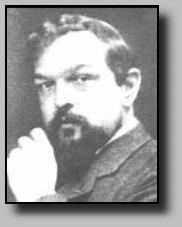

|  | Claude Debussy (1862-1918) Catalogue des oeuvres |
| Biographie | Oeuvre | Références | Liens |
| Catalogue chronologique | Oeuvres |
| Index alphabétiques | Musique instrumentale |
| Musique vocale | |
| Musique de théatre |
Il est possible d'entendre des extraits d'oeuvre
(fichiers MIDI) en cliquant sur l'image suivante:  |
| Références |
|
| Liens |
|